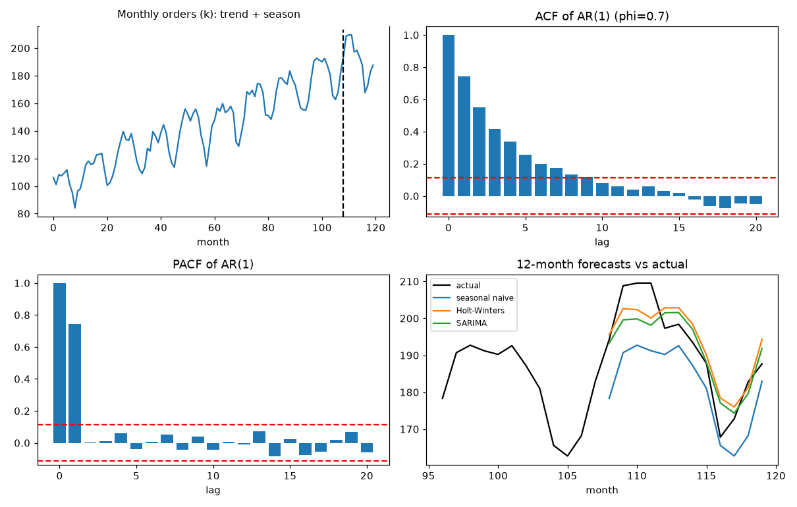
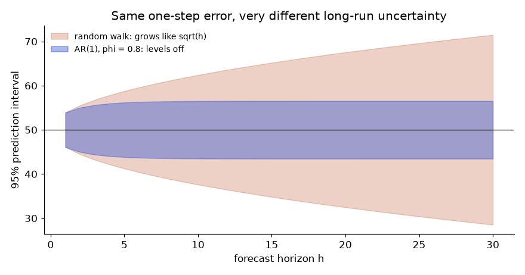
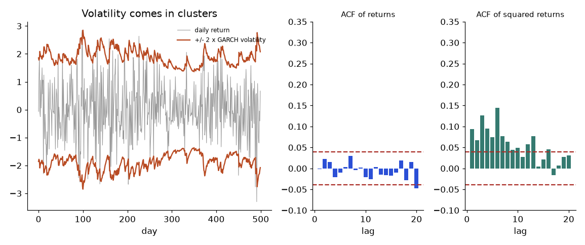

You track the monthly order volume of an online shop and the warehouse team asks: "How many orders will we see next year, and how wrong could you be?" Ordinary statistics assumes rows are independent, like draws from a bag. Time series data breaks that: this month is strongly related to last month and to the same month last year. Ignore this and your confidence intervals lie and your cross-validation leaks the future. In this chapter you learn what makes a series predictable (trend, season, memory), the idea of stationarity and how to test it, how to read the ACF and PACF plots, how ARIMA and SARIMA models work, how exponential smoothing works, and how to evaluate forecasts correctly against simple baselines. We build on regression (Chapters 7 and 8), AIC from Chapter 7, and normal distributions.
Running example: 120 months (10 years) of simulated order volume in thousands, built as 100 + 0.8 × month + yearly seasonal wave + AR(1) noise, fixed seed. We train on the first 108 months and keep the last 12 as a test. The series starts 106.0, 101.1, 108.2, ... and ends 172.8, 182.8, 187.7. statsmodels is not installed here, so I wrote the ACF, PACF, ADF test, Holt-Winters and ARIMA fitting in NumPy/SciPy. In real work you will call statsmodels.tsa (for example ARIMA, SARIMAX, ExponentialSmoothing, adfuller); those calls are "not run here" and you should check argument names in your version.
| Word | Plain meaning | Example |
|---|---|---|
| Time series | Numbers recorded in time order | Orders per month |
| Trend | Slow long-term rise or fall | +0.8k per month |
| Seasonality | Pattern repeating at a fixed period | 12-month cycle |
| Period m | Length of one season | 12 for monthly data with a yearly cycle |
| Noise / residual | What is left after trend and season | Random wobble |
| Lag | How many steps back we look | Lag 12 = same month last year |
| Horizon h | How many steps ahead we forecast | Next 12 months |
y_t = trend_t + season_t + noise_t. (If the seasonal wave grows with the level, use multiplicative: trend × season × noise, or take logs first.) Classical decomposition: (1) estimate the trend with a centred moving average over one full period, (2) subtract it, (3) average the leftovers for each month to get the seasonal pattern, then centre it to sum to zero.
Problem 10.1.1 (tiny) A 4-quarter series: Q1 = 10, Q2 = 14, Q3 = 12, Q4 = 8, with no trend. What is the seasonal index for each quarter?
| Step 1 | Average level = (10 + 14 + 12 + 8)/4 = 11. |
|---|---|
| Step 2 | Index = value − level: Q1 = −1, Q2 = +3, Q3 = +1, Q4 = −3. |
| Answer | Indices −1, +3, +1, −3, which sum to 0. |
| Check | Sum is 0 by construction, and level + index returns the original values. |
| Why it matters | "Q2 runs 3 above average" is a statement the business can use. |
Problem 10.1.2 (realistic) Decompose the 108 training months with a 12-month centred moving average.
| Trend | A straight line fitted through the moving average has slope 0.788 per month and intercept 100.17. We built the data with slope 0.8 and intercept 100. |
|---|---|
| Seasonal indices (Jan to Dec) | 5.4, 11.0, 9.9, 7.0, 10.0, 10.7, 5.0, −6.4, −16.7, −19.2, −13.5, −3.1. The true wave (centred) was 6.0, 10.5, 10.0, 9.0, 10.0, 10.5, 6.0, −4.5, −16.0, −21.0, −16.0, −4.5. |
| Answer | The method recovered the trend almost exactly and the seasonal pattern to within about 3. September to November are the low months (about 14 to 19 thousand below trend). |
| Check | The 12 indices sum to 0 after centring. The moving average loses 6 values at each end, so we only fit the trend on the middle 96 months. |
| Why it matters | Capacity planning, staffing and promotions all use the season pattern. |
Connection to the real job. statsmodels.tsa.seasonal.seasonal_decompose and STL do this. Retail and operations work: order counts, footfall and queue lengths all have daily and weekly seasonality and trends from growth.
Applications
Check yourself
A series is (weakly) stationary if (1) its mean is constant over time, (2) its variance is constant, and (3) the correlation between two values depends only on how far apart they are (the lag), not on when they occur.
Examples: white noise (independent random values) is stationary. A random walk y_t = y_{t−1} + e_t is not: its variance grows with time. A series with trend or season is not.
Differencing replaces each value by the change: Δy_t = y_t − y_{t−1}. This removes a linear trend and turns a random walk into white noise. Seasonal differencing y_t − y_{t−m} removes a repeating season.
The Augmented Dickey-Fuller (ADF) test asks: does the series have a unit root (random-walk-like behaviour)? It regresses the change on the previous level: Δy_t = a + γ·y_{t−1} + (lagged Δy terms) + error. If γ = 0, the series is a random walk. The test statistic is γ̂ / SE(γ̂), but it does NOT follow a normal or t distribution, so the critical values come from special tables. For a regression with a constant, the usual large-sample 5 percent critical value is about −2.86 (1 percent: −3.43, 10 percent: −2.57). Null hypothesis: unit root (non-stationary). To call a series stationary you need a statistic more negative than the critical value. The null and alternative here are the opposite way from what many people expect.
Problem 10.2.1 Compute the ADF statistic (constant, no extra lags) for three simulated series of length 300: an AR(1) with φ = 0.7, a random walk, and the differenced random walk.
| Series | ADF statistic | 5% critical | Decision |
|---|---|---|---|
| AR(1), φ = 0.7 | −6.57 | −2.86 | Reject unit root: stationary |
| Random walk | −0.83 | −2.86 | Cannot reject: non-stationary |
| Differenced random walk | −16.37 | −2.86 | Reject: stationary |
statsmodels.tsa.stattools.adfuller (not run here) reports the same statistic and also a p-value.Problem 10.2.2 Apply ADF (with one lagged difference) to the running example.
| Series | ADF statistic | Decision at 5% (−2.86) |
|---|---|---|
| Original y (trend + season) | −2.37 | Cannot reject: non-stationary |
| First difference Δy | −6.57 | Reject: stationary |
| Seasonal difference (lag 12) | −4.99 | Reject: stationary |
regression="c" or "ct" in adfuller).Connection to the real job. Stationarity checks are step one before ARIMA. Variance that grows with level is fixed with a log or Box-Cox transform. In ML-based forecasting, the same idea appears as "predict the change, not the level".
Applications
Check yourself
Autocorrelation at lag k: r_k = Σ (y_t − ȳ)(y_{t+k} − ȳ) / Σ (y_t − ȳ)². It is like a correlation coefficient between the series and itself shifted by k. About 95 percent of the ACF values of white noise lie within the band ±1.96/√n. Anything outside the band is likely a real pattern.
Problem 10.3.1 (tiny, by hand) y = [2, 4, 6, 5, 3]. Find r₁ and r₂.
| Step 1 | Mean = 20/5 = 4. Deviations: −2, 0, +2, +1, −1. |
|---|---|
| Step 2 | Denominator = 4 + 0 + 4 + 1 + 1 = 10. |
| Step 3 | Lag 1 numerator: (−2)(0) + (0)(2) + (2)(1) + (1)(−1) = 0 + 0 + 2 − 1 = 1. So r₁ = 1/10 = 0.1. |
| Step 4 | Lag 2 numerator: (−2)(2) + (0)(1) + (2)(−1) = −4 + 0 − 2 = −6. So r₂ = −0.6. |
| Answer | r₁ = 0.1, r₂ = −0.6. |
| Check | Code printed 1.0, 0.1, −0.6 (the first is lag 0). Same. |
| Why it matters | Every ACF bar in a plot is this simple computation. |
| Model | What it means | ACF | PACF |
|---|---|---|---|
| AR(p) autoregressive | Today depends on the last p values | Decays slowly (geometric or wave) | Cuts off after lag p |
| MA(q) moving average | Today depends on the last q random shocks | Cuts off after lag q | Decays slowly |
| ARMA(p, q) | Both | Decays | Decays |
| Random walk or trend | Not stationary | Very slow decay, near 1 | Big spike at lag 1 |
| Seasonal (m = 12) | Repeats yearly | Spikes at 12, 24, 36 | Spikes at 12 (and 24) |
Problem 10.3.2 Simulate an AR(1) series y_t = 0.7·y_{t−1} + e_t with 300 points. Read its ACF and PACF.
| Compute | ACF lags 1 to 6: 0.742, 0.552, 0.415, 0.339, 0.257, 0.198. PACF lags 1 to 6: 0.742, 0.002, 0.011, 0.059, −0.039, 0.007. The band is ±1.96/√300 = ±0.113. |
|---|---|
| Answer | ACF decays smoothly (about 0.742^k: 0.742, 0.551, 0.409... matches). PACF has one big spike at lag 1 and then nothing inside the band. This is the signature of AR(1), and r₁ = 0.742 estimates φ (true 0.7). |
| Check | The theory says ACF at lag k is φ^k. 0.742² = 0.551, close to the measured 0.552. |
| Why it matters | The plots point to the model order before you fit anything. |
Problem 10.3.3 For the random walk, the ACF lags 1 to 6 are 0.991, 0.981, 0.972, 0.962, 0.953, 0.942. Interpret.
| Answer | An ACF that stays near 1 and decays very slowly means the series is non-stationary. Difference it before reading the ACF. |
|---|---|
| Why it matters | A "pretty" ACF with huge bars is a warning, not a model. |

Top left: the 120 months of volume. A dashed line at month 108 separates training from test. You see a rising line with a yearly wave. Top right: the ACF bars of the AR(1) series for lags 0 to 20; red dashed lines are the ±0.113 band. Bars decay slowly from 0.74 and stay positive. Bottom left: the PACF of the same series: one bar at lag 1, then all bars inside the red band. Bottom right: the last 24 months and three 12-month forecasts (section 10.6).
Connection to the real job. plot_acf and plot_pacf from statsmodels.graphics.tsaplots (not run here), df.autocorr(lag) in pandas. Residuals of a good model should show no ACF pattern, which you test with the Ljung-Box test (section 10.4).
Applications
Check yourself
ARIMA(p, d, q):
On the differenced series w_t:
w_t = c + φ₁·w_{t−1} + … + φ_p·w_{t−p} + e_t + θ₁·e_{t−1} + … + θ_q·e_{t−q}Here e_t is white noise (a fresh random shock each step). Stationarity of the AR part requires φ values inside certain limits (for AR(1): |φ| < 1).
SARIMA(p,d,q)(P,D,Q)m adds the same ideas at the seasonal lag m. For example (0,1,1)(0,1,1)12, often called the "airline model": difference once, seasonally difference once, then w_t = e_t + θ·e_{t−1} + Θ·e_{t−12} + θΘ·e_{t−13}. The last term comes from multiplying the two MA pieces.
How do we fit? Maximum likelihood, in practice. Our code uses a simpler cousin, conditional least squares: choose parameters that minimise the sum of squared one-step errors e_t, computing each e_t from the previous ones. It gives nearly the same answer for long series. statsmodels uses exact maximum likelihood with a Kalman filter.
Problem 10.4.1 Simulate 400 points from an ARIMA(1,1,1) with true φ = 0.6 and θ = 0.3 (and a small drift). Choose p and q by AIC and BIC on the differenced series. Then forecast.
| (p, q) | AIC | BIC | Estimates |
|---|---|---|---|
| (0, 0) | 1475.57 | 1483.55 | mean 0.074 |
| (0, 1) | 1232.79 | 1244.75 | θ = 0.691 |
| (1, 0) | 1169.15 | 1181.11 | φ = 0.734 |
| (1, 1) | 1154.65 | 1170.60 | φ = 0.603, θ = 0.292 |
| (1, 2) | 1156.05 | 1176.00 | φ = 0.652, θ = 0.239, −0.059 |
| (2, 1) | 1155.88 | 1175.83 | |
| (2, 2) | 1157.83 | 1181.76 |
Problem 10.4.2 (forecast and its uncertainty) Use the fitted (1,1,1) to forecast 5 steps ahead from the last value 128.21.
| Step 1 | Forecast of the differences: 0.891, 0.561, 0.362, 0.242, 0.169. They shrink, because the AR part pulls changes back to their small mean (0.059). |
|---|---|
| Step 2 | Add them up from the last level: 128.21 + 0.891 = 129.10, then 129.66, 130.03, 130.27, 130.44. |
| Step 3 | Uncertainty: the shock effects on the level are psi weights 1, 0.895, 0.54, 0.326, 0.197. Standard error at horizon h = σ × √(Σ of squared cumulative psi weights). With σ² = 1.037, SEs are 1.02, 2.18, 3.30, 4.34, 5.28. |
| Answer | One step ahead: 129.10 with 95 percent interval 127.1 to 131.1. Five steps ahead: 130.44 ± about 10.4 (1.96 × 5.28). |
| Check | The SE at h = 1 (1.018) equals the residual SD √1.037 = 1.018, as it must. |
| Why it matters | Forecast intervals widen with the horizon. An ARIMA with d = 1 has no upper limit on the widening, which is honest: far-future guesses are uncertain. |
Problem 10.4.3 (SARIMA on the running example) Fit SARIMA(0,1,1)(0,1,1)12 to the 108 training months by conditional least squares.
| Compute | θ = −0.743, Θ = −0.623 (conditional least squares, code). Forecast the 12 test months. |
|---|---|
| Answer | First four forecasts 193.3, 199.6, 199.9, 198.1 versus actual 194.2, 208.8, 209.5, 209.6. Over the 12 test months, MAE = 5.05, RMSE = 6.23. |
| Check | Ljung-Box test on the residuals (10 lags): Q = 7.94, p = 0.44. A p-value this large means no leftover autocorrelation. The model has captured the structure. (The degrees of freedom were 10 − 2 = 8 for the two fitted parameters.) |
| Why it matters | A model is good when residuals look like white noise and forecasts beat simple baselines (section 10.6). |
Fitting recipe (Box-Jenkins):
# not run here: statsmodels is not installed in this environment
from statsmodels.tsa.statespace.sarimax import SARIMAX
m = SARIMAX(train, order=(0,1,1), seasonal_order=(0,1,1,12)).fit()
print(m.summary()) # coefficients, AIC, BIC, Ljung-Box
fc = m.get_forecast(12)
fc.predicted_mean, fc.conf_int() # forecast and intervalConnection to the real job. ARIMA/SARIMA is the classic benchmark. Even if you finally use Prophet, gradient boosting, or neural networks for forecasting, you are expected to beat a SARIMA or exponential smoothing baseline. Explaining a model using the language of ACF and residual checks is an interview topic.
Applications
Check yourself
Simple exponential smoothing (SES) (no trend, no season): keep a level L. Forecast = L. After seeing a new value y: L_new = α·y + (1 − α)·L_old. Equivalent: the new level = old level + α × (forecast error). It is a running average that "learns from its mistakes".
Holt's method adds a trend: level L and slope T, with smoothing β. Holt-Winters adds seasonal values S, with smoothing γ. Additive form:
forecast(t + k) = L + k·T + S(same season last cycle)
L_new = α·(y − S_old) + (1 − α)·(L + T)
T_new = β·(L_new − L) + (1 − β)·T
S_new = γ·(y − L_new) + (1 − γ)·S_oldExponential smoothing and ARIMA are different families that overlap: SES is the same as ARIMA(0,1,1) with θ = −(1 − α).
Problem 10.5.1 (tiny SES by hand) y = [10, 12, 11, 13], α = 0.5. Start with level = first value, 10.
| Step 1 | Forecast for point 2 = 10. Actual = 12, so the new level = 0.5 × 12 + 0.5 × 10 = 11. |
|---|---|
| Step 2 | Forecast for point 3 = 11. Actual = 11. New level = 0.5 × 11 + 0.5 × 11 = 11. |
| Step 3 | Forecast for point 4 = 11. Actual = 13. New level = 0.5 × 13 + 0.5 × 11 = 12. |
| Answer | The forecast for point 5 is 12.0. Code printed the forecasts 10, 11, 11 and final level 12.0. |
| Check | If α = 1 the forecast equals the last value (naive). If α = 0 it never changes. 0.5 is a balance. |
| Why it matters | This tiny loop is the entire algorithm; seasonal versions just keep more states. |
Problem 10.5.2 Estimate α for SES on the random walk (300 points) by minimising the squared one-step error.
| Answer | Best α = 0.999, essentially 1. For a random walk the best forecast of tomorrow is today, so smoothing is pointless. For a stable series with noise around a level, α would be small. |
|---|---|
| Why it matters | α is estimated from the data; it tells you how much "memory" the series has. |
Problem 10.5.3 (Holt-Winters on the running example) Fit additive Holt-Winters (period 12) on the 108 training months by minimising squared one-step errors (L-BFGS-B, bounds 0.001 to 0.999).
| Compute | α = 0.248, β = 0.001 (at the lower bound), γ = 0.600. SSE = 3017.3. Forecast the 12 test months: MAE = 5.29, RMSE = 5.99. |
|---|---|
| Answer | β at its bound means the trend is nearly fixed, consistent with a constant straight-line trend. γ = 0.6 means the seasonal pattern adapts fairly quickly. |
| Check | The result is very close to SARIMA's MAE (5.05), as is usual: both families model the same patterns. |
| Why it matters | Holt-Winters is simple, fast and hard to beat for monthly business series. |
Connection to the real job. statsmodels.tsa.holtwinters.ExponentialSmoothing and the ETS family (not run here). Used for demand forecasting at scale because it fits quickly for thousands of series.
Applications
Check yourself
| Metric | Formula | Notes |
|---|---|---|
| MAE | mean of abs(error) | Same units as data; easy to explain |
| RMSE | √ mean of error² | Punishes big misses more |
| MAPE | mean of abs(error/actual) × 100 | In percent; breaks when actual is near 0 |
| MASE | MAE of model / MAE of a naive forecast on training data | Below 1 means better than naive; unit-free |
Here MASE uses the in-sample seasonal-naive MAE (average of |y_t − y_{t−12}| over the training data) as the scale. This is the version for seasonal data.
Problem 10.6.1 Evaluate five forecasts on the 12 test months (months 109 to 120).
| Method | MAE | RMSE | MAPE % | MASE |
|---|---|---|---|---|
| Naive (repeat last value) | 13.79 | 16.17 | 7.01 | 1.34 |
| Seasonal naive | 10.56 | 11.94 | 5.39 | 1.03 |
| Decomposition: trend line + seasonal indices | 5.34 | 7.21 | 2.69 | 0.52 |
| Holt-Winters (additive) | 5.29 | 5.99 | 2.75 | 0.51 |
| SARIMA(0,1,1)(0,1,1)12 | 5.05 | 6.23 | 2.59 | 0.49 |
Rolling-origin evaluation (time series cross-validation). One 12-month test is a single draw of luck. Instead, move the forecast origin forward step by step: train up to month 60, forecast month 61; train up to 61, forecast 62; and so on, then average the errors. The training window always ends before the forecasted point, so there is no leakage. In our one-step-ahead test over months 61 to 119, MAE for naive = 6.70 and for seasonal naive = 10.37. Here, for 1-step forecasts, naive beats seasonal naive, because the AR(1) noise makes the last value very informative and yearly growth hurts seasonal naive. So the best baseline depends on the horizon: always test the horizon you will use.
Prediction intervals should be checked too: of the 12 test points, about 95 percent should fall inside the 95 percent interval. Over many origins, count how many do (coverage). Intervals that are too narrow are a common sin.
Connection to the real job. Business forecasting reviews, and MLOps backtests: "the model beat seasonal naive in 8 of 10 rolling windows" is a strong statement. In Python: sklearn.model_selection.TimeSeriesSplit, sktime, statsmodels.
Applications
Check yourself
A forecasting model is finished when its residuals look like white noise: no pattern in the mean, constant spread, no autocorrelation. Any leftover autocorrelation is information the model failed to use. Look at the residual ACF first, then run a formal test.
The Ljung-Box test asks whether the first h autocorrelations of the residuals are jointly zero. Its statistic is Q = N(N + 2) Σ rk² / (N − k), summed for k = 1 to h, and it is compared with a chi-square distribution with h minus (number of fitted ARMA parameters) degrees of freedom. A small p-value says "structure remains".
Problem 10.7.1 Simulate 300 points from an AR(1) with φ = 0.6. Fit two models: "just a mean" and AR(1). Compare the residual ACFs and the Ljung-Box test at 10 lags.
import numpy as np
from scipy.stats import chi2
rng = np.random.default_rng(7)
n, phi = 300, 0.6
e = rng.normal(0, 1, n); y = np.zeros(n)
for t in range(1, n): y[t] = phi * y[t-1] + e[t]
def acf(x, k):
x = x - x.mean(); d = np.dot(x, x)
return np.array([np.dot(x[:len(x)-l], x[l:]) / d for l in range(1, k + 1)])
def ljung_box(res, h, n_params=0):
r = acf(res, h); N = len(res)
Q = N * (N + 2) * np.sum(r ** 2 / (N - np.arange(1, h + 1)))
return Q, 1 - chi2.cdf(Q, h - n_params)
res_mean = y - y.mean() # model 1: "just a mean"
phi_hat = np.dot(y[1:] - y.mean(), y[:-1] - y.mean()) / np.dot(y[:-1] - y.mean(), y[:-1] - y.mean())
res_ar = (y[1:] - y.mean()) - phi_hat * (y[:-1] - y.mean()) # model 2: AR(1)
print("residual ACF at lags 1-3, mean-only model:", np.round(acf(res_mean, 3), 3))
print("residual ACF at lags 1-3, AR(1) model :", np.round(acf(res_ar, 3), 3))
print(f"phi_hat = {phi_hat:.3f} (true 0.6); 95% white-noise band for the ACF = +/- {1.96/np.sqrt(n):.3f}")
Q, p = ljung_box(res_mean, 10); print(f"Ljung-Box, mean-only, 10 lags: Q = {Q:.1f}, p < 0.0001" if p < 1e-4 else f"Ljung-Box, mean-only: Q = {Q:.1f}, p = {p:.3f}")
Q, p = ljung_box(res_ar, 10, 1); print(f"Ljung-Box, AR(1), 10 lags: Q = {Q:.1f}, p = {p:.3f} (df = 10 - 1 fitted parameter)")residual ACF at lags 1-3, mean-only model: [0.607 0.384 0.27 ]
residual ACF at lags 1-3, AR(1) model : [-0.016 -0.011 0.054]
phi_hat = 0.607 (true 0.6); 95% white-noise band for the ACF = +/- 0.113
Ljung-Box, mean-only, 10 lags: Q = 208.1, p < 0.0001
Ljung-Box, AR(1), 10 lags: Q = 10.8, p = 0.289 (df = 10 - 1 fitted parameter)| Step 1 | The white-noise band for the ACF is ±1.96 / √300 = ±0.113. Anything beyond it at a few lags is suspicious; one bar of 20 slightly outside is normal. |
|---|---|
| Step 2 | Mean-only residuals have lag-1, lag-2 and lag-3 autocorrelations of 0.607, 0.384, 0.270. All are far beyond the band, and they decay slowly, the AR signature. |
| Step 3 | The AR(1) fit gives φ̂ = 0.607 (truth 0.6). Its residual autocorrelations are -0.016, -0.011, 0.054: inside the band. |
| Step 4 | Ljung-Box: Q = 208.1 (p below 0.0001) for the mean-only model, Q = 10.8 (p = 0.289) for the AR(1) model. The degrees of freedom are 10 for the first and 9 for the second, since one parameter was fitted. |
| Answer | The mean-only model leaves structure behind; the AR(1) model does not. Only the second can be trusted for forecasting. |
A point forecast with no interval is half an answer. The interval should widen as you look further ahead, but how fast depends on the model. For an AR(1) with coefficient φ and shock SD σ, the h-step forecast error has variance σ² (1 + φ² + … + φ2(h−1)), which levels off at the long-run variance σ² / (1 − φ²). For a random walk, the variance is σ² h, which grows forever. Intervals from differenced (integrated) models keep growing; intervals from stationary models stop.
Problem 10.8.1 An AR(1) with φ = 0.8, σ = 2, mean 50, and the last value at 50. Compute the forecast error SD at horizons 1, 2, 5, 10, 20 by the formula and by simulation (200,000 paths), and compare with a random walk.
import numpy as np
rng = np.random.default_rng(103)
phi, sigma, mu = 0.8, 2.0, 50.0
hs = [1, 2, 5, 10, 20]
print("Forecast error SD at horizon h")
print(" h AR(1) formula simulated random-walk formula")
reps = 200000
x0 = mu # last observation sits at the mean
e = rng.normal(0, sigma, (reps, max(hs)))
paths = np.zeros((reps, max(hs))); prev = np.full(reps, x0)
for j in range(max(hs)):
prev = mu + phi * (prev - mu) + e[:, j]; paths[:, j] = prev
for h in hs:
f = sigma * np.sqrt(sum(phi ** (2 * j) for j in range(h)))
print(f"{h:>2} {f:>12.3f} {paths[:, h-1].std():>9.3f} {sigma*np.sqrt(h):>14.3f}")
print("long-run SD of a stationary AR(1):", round(sigma / np.sqrt(1 - phi ** 2), 3))
print("95% interval for h=10 from AR(1): 50 +/-", round(1.96 * sigma * np.sqrt(sum(phi ** (2 * j) for j in range(10))), 2),
" vs random walk: +/-", round(1.96 * sigma * np.sqrt(10), 2))Forecast error SD at horizon h
h AR(1) formula simulated random-walk formula
1 2.000 1.990 2.000
2 2.561 2.551 2.828
5 3.149 3.152 4.472
10 3.314 3.312 6.325
20 3.333 3.341 8.944
long-run SD of a stationary AR(1): 3.333
95% interval for h=10 from AR(1): 50 +/- 6.5 vs random walk: +/- 12.4
How to read it: The orange band is wide and flaring because a random walk never forgets a shock. The blue band stops growing at about ±6.5 because an AR(1) is pulled back toward its mean, so uncertainty at long horizons is just the ordinary spread of the series.
| Step 1 | Horizon 1 error SD = σ = 2.000. Both models agree here. |
|---|---|
| Step 2 | Horizon 2: 2 × √(1 + 0.64) = 2.561. Simulation gives 2.551. |
| Step 3 | Horizon 10: formula 3.314, simulation 3.312. The formula is right. |
| Step 4 | By horizon 20 the AR(1) SD is 3.333, equal to the long-run SD 2 / √(1 − 0.64) = 3.333, while the random walk is at 8.944. |
| Step 5 | A 95 percent interval at horizon 10 is 50 ± 6.5 for the AR(1) and ± 12.4 for a random walk with the same shock size. Choosing the wrong model roughly doubles the claimed uncertainty. |
| Answer | Interval width at long horizons is a statement about stationarity, so it is a model assumption, not a data fact. Check it with a stationarity test and a backtest of interval coverage. |
Section 10.6 introduced forecast error measures. Here is how to use them to choose among models without fooling yourself. Ordinary cross-validation shuffles rows, which lets the model peek at the future. Time series instead use a rolling origin: pick a cutoff, train on everything before it, forecast the next H steps, score, then move the cutoff forward and repeat. With an expanding window you keep all history; with a sliding window you keep only the last W points, which is better when the process changes.
Problem 10.9.1 A monthly series of 144 points with trend 0.5 per month, a yearly seasonal pattern and noise SD 3. Compare four forecasters over 11 rolling origins (first at month 72, then every 6 months), each forecasting 12 months ahead: naive (last value), seasonal naive (same month last year), drift (straight line through first and last point) and a regression with trend plus 11 month dummies. Report mean MAE, the worst origin and MASE (MAE divided by the in-sample seasonal-naive MAE on the first 72 points).
import numpy as np
rng = np.random.default_rng(102)
T, m = 144, 12
t = np.arange(T)
season = 10 * np.sin(2 * np.pi * t / m) + 4 * np.cos(2 * np.pi * t / m * 2)
y = 100 + 0.5 * t + season + rng.normal(0, 3, T) # trend + seasonality + noise
H = 12
def f_naive(tr, h): return np.repeat(tr[-1], h)
def f_snaive(tr, h): return np.array([tr[len(tr) - m + (i % m)] for i in range(h)])
def f_drift(tr, h): return tr[-1] + (tr[-1] - tr[0]) / (len(tr) - 1) * np.arange(1, h + 1)
def f_reg(tr, h): # linear trend + 11 month dummies, fit by least squares
def X(idx): return np.column_stack([np.ones(len(idx)), idx] + [(idx % m == j).astype(float) for j in range(1, m)])
idx = np.arange(len(tr)); b = np.linalg.lstsq(X(idx), tr, rcond=None)[0]
return X(np.arange(len(tr), len(tr) + h)) @ b
models = {"naive": f_naive, "seasonal naive": f_snaive, "drift": f_drift, "trend + seasonal dummies": f_reg}
origins = range(72, T - H + 1, 6) # rolling origin, expanding window, 12 origins
print("origins:", len(list(origins)), " horizon:", H)
mae = {k: [] for k in models}
for o in origins:
tr, te = y[:o], y[o:o + H]
for k, f in models.items(): mae[k].append(np.mean(np.abs(te - f(tr, H))))
scale = np.mean(np.abs(y[m:72] - y[:72 - m])) # MASE scale: in-sample seasonal naive MAE on the first 72 points
print(f"{'model':<26}{'mean MAE':>9}{'worst origin':>14}{'MASE':>7}")
for k in models: print(f"{k:<26}{np.mean(mae[k]):>9.2f}{np.max(mae[k]):>14.2f}{np.mean(mae[k])/scale:>7.2f}")origins: 11 horizon: 12
model mean MAE worst origin MASE
naive 8.57 10.91 1.35
seasonal naive 6.15 8.09 0.97
drift 8.67 13.46 1.37
trend + seasonal dummies 2.70 3.93 0.43| Step 1 | Naive: MAE 8.57. It ignores the seasonal swing of about ±10 and the trend, so it errs by roughly the size of the swing. |
|---|---|
| Step 2 | Seasonal naive: MAE 6.15, MASE 0.97. It captures the seasonal shape but not the trend, so it is always about 6 below (0.5 × 12) and carries a year of noise. |
| Step 3 | Drift: MAE 8.67, the worst origin 13.46. A straight line with no seasonality is worse than naive at some origins. |
| Step 4 | Trend plus seasonal dummies: MAE 2.70, MASE 0.43, worst origin 3.93. It matches the way the data were made. The noise SD is 3, so an MAE near 2.4 (0.8 × 3) is the floor for any forecaster; 2.70 is close. |
| Step 5 | MASE below 1 means better than the seasonal-naive benchmark; it is also unit-free, so you can compare across series. |
| Answer | Pick the regression. It wins at every origin on average and in the worst case, and it is simple. Always include the naive and seasonal-naive baselines: if a complex model cannot beat them, it is not earning its complexity. |
When a series depends on outside drivers (promotions, temperature, price), you want to estimate their effect and still respect that the leftover noise has memory. The model is yt = β0 + β1 xt + ut where ut follows an ARMA process. If you ignore the memory and use ordinary least squares, the coefficient estimate is still unbiased, but its standard error is wrong, usually too small when both the driver and the errors are positively autocorrelated. You then see "significant" effects that are not.
Problem 10.10.1 Daily sales = 50 + 3 × promo + AR(1) noise with ρ = 0.7, 120 days, promos in 5-day blocks. Simulate 1,000 datasets. Compare OLS with a Cochrane-Orcutt fit (estimate ρ from the residuals, transform both sides by subtracting ρ times the previous day, refit). Check whether each reported 95 percent interval really covers the truth 95 percent of the time.
import numpy as np
rng = np.random.default_rng(104)
n, rho, reps = 120, 0.7, 1000
def one():
promo = np.zeros(n)
for s in range(0, n, 10): promo[s:s+5] = 1 # promo runs in 5-day blocks (also autocorrelated)
e = rng.normal(0, 1, n); u = np.zeros(n)
for t in range(1, n): u[t] = rho * u[t-1] + e[t]
y = 50 + 3.0 * promo + u
X = np.column_stack([np.ones(n), promo])
b = np.linalg.solve(X.T @ X, X.T @ y); r = y - X @ b
se_ols = np.sqrt(np.diag(np.linalg.inv(X.T @ X)) * (r @ r) / (n - 2))[1]
# Cochrane-Orcutt: estimate rho from OLS residuals, transform, refit once more
rh = np.dot(r[1:], r[:-1]) / np.dot(r[:-1], r[:-1])
ys, Xs = y[1:] - rh * y[:-1], X[1:] - rh * X[:-1]
bs = np.linalg.solve(Xs.T @ Xs, Xs.T @ ys); rs = ys - Xs @ bs
se_co = np.sqrt(np.diag(np.linalg.inv(Xs.T @ Xs)) * (rs @ rs) / (n - 3))[1]
return b[1], se_ols, bs[1], se_co
out = np.array([one() for _ in range(reps)])
print("promo effect (truth 3.0), 1000 simulated datasets")
print(f"OLS : mean estimate {out[:,0].mean():.3f}, actual SD of estimates {out[:,0].std():.3f}, average reported SE {out[:,1].mean():.3f}, 95% CI coverage {np.mean(np.abs(out[:,0]-3) < 1.96*out[:,1]):.3f}")
print(f"AR(1) errors CO: mean estimate {out[:,2].mean():.3f}, actual SD of estimates {out[:,2].std():.3f}, average reported SE {out[:,3].mean():.3f}, 95% CI coverage {np.mean(np.abs(out[:,2]-3) < 1.96*out[:,3]):.3f}")promo effect (truth 3.0), 1000 simulated datasets
OLS : mean estimate 3.002, actual SD of estimates 0.279, average reported SE 0.246, 95% CI coverage 0.916
AR(1) errors CO: mean estimate 3.003, actual SD of estimates 0.225, average reported SE 0.229, 95% CI coverage 0.959| Step 1 | Both methods estimate the promo effect without bias: 3.002 and 3.003 against a true 3.0. |
|---|---|
| Step 2 | OLS reports an average SE of 0.246, but the real spread of its estimates across datasets is 0.279. The reported SE is about 12 percent too small. |
| Step 3 | As a result, nominal 95 percent OLS intervals cover the truth only 91.6 percent of the time. |
| Step 4 | The AR(1)-errors fit reports SE 0.229 against a true spread of 0.225, and its intervals cover 95.9 percent. |
| Answer | Same point estimate, honest uncertainty only when the error memory is modelled. In practice use SARIMAX(y, exog=X, order=(1,0,0)) in statsmodels, or heteroscedasticity and autocorrelation consistent (Newey-West) standard errors, if you only need robust SEs. |
SARIMAX(y, exog=promo, order=(1, 0, 0)).fit() was not run here because statsmodels is not installed in this environment. The hand-written Cochrane-Orcutt code above was run and demonstrates the same idea.Exponential smoothing (section 10.5) is a family. The ETS framework names a model by three letters: Error (additive A or multiplicative M), Trend (none N, additive A, damped Ad) and Seasonal (N, A or M). ETS(A,N,N) is simple exponential smoothing, ETS(A,A,N) is Holt's linear method, ETS(A,Ad,A) is damped-trend Holt-Winters with additive seasonality. Software fits all candidates, picks by AICc, and gives proper prediction intervals.
| Pattern in the data | Choose | Why |
|---|---|---|
| Flat level, noise | ETS(A,N,N) | Forecast is a smoothed level |
| Steady trend | ETS(A,A,N), better ETS(A,Ad,N) | Damping stops the trend from running forever |
| Seasonal swing of constant size | Additive seasonal | Swing does not grow with the level |
| Seasonal swing that grows with the level | Multiplicative seasonal (or log the series) | Swing is proportional to the level |
| Many zeros, occasional spikes | Croston or SBA, not plain ETS | Level and spacing of demand are two separate processes |
Intermittent demand (spare parts, niche products) breaks ordinary methods because most periods are zero. Croston's method smooths the non-zero demand sizes z and the gaps q between demands separately and forecasts z / q per period. The SBA variant multiplies by (1 − α/2) to remove a small upward bias.
Problem 10.11.1 400 periods where demand occurs with probability 0.25 and, when it does, averages 5 units (true mean 1.25 per period). Compare SES, Croston, Croston-SBA and "always forecast zero" on forecasts for periods 101 to 400.
import numpy as np
rng = np.random.default_rng(106)
T = 400; p_occ = 0.25
demand = np.where(rng.random(T) < p_occ, rng.poisson(4, T) + 1, 0) # mean per period = 0.25 * 5 = 1.25
print("share of zero periods:", round((demand == 0).mean(), 2), " true mean per period: 1.25 sample mean:", round(demand.mean(), 2))
def ses(d, a=0.1):
f = np.empty(len(d)); l = d[:10].mean()
for t, x in enumerate(d): f[t] = l; l = l + a * (x - l)
return f # f[t] = forecast made before seeing d[t]
def croston(d, a=0.1, sba=False):
f = np.empty(len(d)); nz = np.flatnonzero(d)
z = d[nz[0]]; q = nz[0] + 1.0; last = nz[0]
for t, x in enumerate(d):
f[t] = (1 - a / 2 if sba else 1) * z / q if t > nz[0] else d[:10].mean()
if x > 0:
z = z + a * (x - z); q = q + a * ((t - last) - q); last = t
return f
s, c, b = ses(demand), croston(demand), croston(demand, sba=True)
sl = slice(100, None)
print(f"{'method':<14}{'mean forecast':>14}{'MAE':>7}{'RMSE':>7}")
for name, f in [("SES a=0.1", s), ("Croston", c), ("Croston SBA", b), ("always zero", np.zeros(T))]:
e = demand[sl] - f[sl]; print(f"{name:<14}{f[sl].mean():>14.2f}{np.abs(e).mean():>7.2f}{np.sqrt((e**2).mean()):>7.2f}")
print("SD of the forecast over time: SES", round(s[sl].std(), 2), " Croston", round(c[sl].std(), 2))share of zero periods: 0.75 true mean per period: 1.25 sample mean: 1.24
method mean forecast MAE RMSE
SES a=0.1 1.19 1.74 2.26
Croston 1.23 1.79 2.25
Croston SBA 1.17 1.76 2.25
always zero 0.00 1.16 2.51
SD of the forecast over time: SES 0.62 Croston 0.3| Step 1 | 75 percent of periods are zero. The sample mean is 1.24, near the true 1.25. |
|---|---|
| Step 2 | SES, Croston and SBA all forecast close to the true mean (1.19, 1.23, 1.17). Croston's forecasts are steadier over time (SD 0.30 against 0.62 for SES) because spikes do not whip its level around. |
| Step 3 | RMSE is about 2.25 for all three, and 2.51 for the zero forecast. RMSE rewards forecasting the mean. |
| Step 4 | MAE tells the opposite story: the zero forecast wins at 1.16 against about 1.75. MAE is minimised by the median, which is 0 when most periods are zero. |
| Answer | Scoring intermittent demand with MAE or MAPE rewards a useless forecast. Use RMSE, or better, a measure aimed at what you plan: for stocking decisions, score the quantile (service-level) forecast with pinball loss. |
Financial returns, sensor noise and demand shocks often show volatility clustering: calm weeks followed by wild ones. The returns themselves look uncorrelated, but their squares are not. The GARCH(1,1) model describes this with two equations: rt = σt εt and σt² = ω + α rt−1² + β σt−1². Today's variance is a baseline plus a reaction to yesterday's surprise plus memory of yesterday's variance. Persistence is α + β; the long-run variance is ω / (1 − α − β).
Problem 10.12.1 Simulate 2,500 daily returns from a GARCH(1,1) with ω = 0.05, α = 0.10, β = 0.85. Test whether returns and squared returns are autocorrelated, fit the model by maximum likelihood, check the standardized residuals, and compare 1-day 99 percent Value-at-Risk (VaR) from GARCH and from a constant volatility.
import numpy as np
from scipy.optimize import minimize
from scipy.stats import chi2
rng = np.random.default_rng(105)
n = 2500; om, al, be = 0.05, 0.10, 0.85 # long-run variance = om / (1 - al - be) = 1.0
r = np.zeros(n); s2 = np.zeros(n); s2[0] = om / (1 - al - be)
for t in range(n):
if t > 0: s2[t] = om + al * r[t-1] ** 2 + be * s2[t-1]
r[t] = np.sqrt(s2[t]) * rng.normal()
def acf(x, k):
x = x - x.mean(); d = np.dot(x, x); return np.array([np.dot(x[:len(x)-l], x[l:]) / d for l in range(1, k + 1)])
pf = lambda p: "< 0.0001" if p < 1e-4 else f"= {p:.3f}"
def lb(x, h):
N = len(x); Q = N * (N + 2) * np.sum(acf(x, h) ** 2 / (N - np.arange(1, h + 1))); return Q, 1 - chi2.cdf(Q, h)
print("ACF of returns, lags 1-3:", np.round(acf(r, 3), 3), " Ljung-Box p", pf(lb(r, 10)[1]))
print("ACF of squared returns, lags 1-3:", np.round(acf(r**2, 3), 3), " Ljung-Box p", pf(lb(r**2, 10)[1]))
def filt(p):
o, a, b = p; v = np.empty(n); v[0] = r.var()
for t in range(1, n): v[t] = o + a * r[t-1] ** 2 + b * v[t-1]
return v
def nll(p):
o, a, b = p
if o <= 1e-6 or a < 0 or b < 0 or a + b >= 0.9999: return 1e10
v = filt(p); return 0.5 * np.sum(np.log(v) + r ** 2 / v)
fit = minimize(nll, [0.1, 0.05, 0.8], method="Nelder-Mead", options={"xatol": 1e-6, "fatol": 1e-8, "maxiter": 4000})
o, a, b = fit.x; v = filt(fit.x)
print(f"GARCH(1,1) estimates: omega {o:.3f} (0.05), alpha {a:.3f} (0.10), beta {b:.3f} (0.85); persistence {a+b:.3f}; long-run variance {o/(1-a-b):.2f}")
z = r / np.sqrt(v)
print("standardized residuals: ACF of squares lags 1-3:", np.round(acf(z**2, 3), 3), " Ljung-Box p", pf(lb(z**2, 10)[1]))
q = 2.326 # one-sided 99 percent normal quantile
var_g = q * np.sqrt(v); var_c = q * r.std()
print(f"1-day 99% VaR breaches (expected 1.0%): GARCH {np.mean(r < -var_g)*100:.1f}%, constant-volatility {np.mean(r < -var_c)*100:.1f}%")
calm = v < np.percentile(v, 25); wild = v > np.percentile(v, 75)
print(f"breach rate in calmest quarter of days: constant {np.mean(r[calm] < -var_c)*100:.1f}%, GARCH {np.mean(r[calm] < -var_g[calm])*100:.1f}%")
print(f"breach rate in wildest quarter of days: constant {np.mean(r[wild] < -var_c)*100:.1f}%, GARCH {np.mean(r[wild] < -var_g[wild])*100:.1f}%")ACF of returns, lags 1-3: [-0.001 0.023 0.016] Ljung-Box p = 0.749
ACF of squared returns, lags 1-3: [0.094 0.067 0.126] Ljung-Box p < 0.0001
GARCH(1,1) estimates: omega 0.054 (0.05), alpha 0.083 (0.10), beta 0.855 (0.85); persistence 0.938; long-run variance 0.87
standardized residuals: ACF of squares lags 1-3: [-0.007 -0.02 0.026] Ljung-Box p = 0.545
1-day 99% VaR breaches (expected 1.0%): GARCH 1.2%, constant-volatility 1.1%
breach rate in calmest quarter of days: constant 0.5%, GARCH 0.8%
breach rate in wildest quarter of days: constant 2.1%, GARCH 1.1%
How to read it: In the middle panel all bars sit inside the dashed lines: no linear predictability. In the right panel the bars at the first lags are well above the lines: big moves follow big moves. In the left panel the orange band widens in turbulent stretches and narrows in calm ones.
| Step 1 | ACF of returns at lags 1 to 3 is about 0 (Ljung-Box p = 0.749). ACF of squared returns is 0.094, 0.067, 0.126 with p below 0.0001: the variance has memory. |
|---|---|
| Step 2 | MLE gives ω = 0.054, α = 0.083, β = 0.855. Persistence 0.938; long-run variance 0.87 (truth 1.0). Estimates are close; α and β are individually noisy, but their sum is well determined. |
| Step 3 | Standardized residuals rt / σ̂t have squared-ACF near 0 (p = 0.545): the model has absorbed the clustering. |
| Step 4 | Overall 99 percent VaR breaches are 1.2 percent with GARCH and 1.1 percent with constant volatility: no difference on average. |
| Step 5 | Split by regime the difference is clear. In the wildest quarter of days, constant-volatility VaR breaches 2.1 percent of the time (twice the target) against 1.1 percent for GARCH. In the calmest quarter it breaches 0.5 percent: wasted capital. |
| Answer | A constant-variance model is right on average and wrong when it matters. GARCH puts the risk where it is. |
arch package (arch_model(r, vol="GARCH", p=1, q=1).fit()). It is not installed here, so the code above does the maximum likelihood by hand with scipy.| Item | Formula or call | Note |
|---|---|---|
| Difference | Δy = y_t − y_{t−1}; seasonal y_t − y_{t−m} | removes trend / season |
| ACF | r_k = Σ(y_t−ȳ)(y_{t+k}−ȳ)/Σ(y_t−ȳ)² | band ±1.96/√n |
| ADF | Δy_t = a + γy_{t−1} + … | reject if stat < −2.86 (5%, const) |
| AR(1) ACF | φ^k | PACF cuts off at 1 |
| ARIMA | ARIMA(order=(p,d,q)), SARIMAX(seasonal_order=(P,D,Q,m)) | statsmodels |
| SES | L_new = αy + (1−α)L_old | forecast = L |
| MASE | MAE / naive MAE (training) | below 1 beats naive |
| Ljung-Box | Q = n(n+2) Σ r_k²/(n−k) | p > 0.05 good |
1 (easy). Monthly sales Jan to Mar of one year: 100, 120, 110. Differences? Answer: 20 and −10.
2 (easy). Compute r₁ for y = [1, 3, 2, 4]. (Mean 2.5.) Answer: Deviations −1.5, 0.5, −0.5, 1.5. Denominator: 2.25 + 0.25 + 0.25 + 2.25 = 5. Numerator: (−1.5)(0.5) + (0.5)(−0.5) + (−0.5)(1.5) = −0.75 − 0.25 − 0.75 = −1.75. r₁ = −0.35.
3 (easy). SES with α = 0.3, old level 50, new actual 60. New level? Answer: 0.3 × 60 + 0.7 × 50 = 18 + 35 = 53.
4. An AR(1) has φ = 0.8. What are the ACF values at lags 1, 2, 3? Answer: 0.8, 0.64, 0.512.
5. ACF of white noise with n = 100: what is the 95 percent band? Answer: ±1.96/√100 = ±0.196.
6. Model errors on 4 test points: 3, −5, 2, −6. Actuals: 50, 80, 40, 60. Compute MAE, RMSE, MAPE. Answer: MAE = (3 + 5 + 2 + 6)/4 = 4. RMSE = √((9 + 25 + 4 + 36)/4) = √18.5 = 4.30. MAPE = (3/50 + 5/80 + 2/40 + 6/60)/4 × 100 = (0.06 + 0.0625 + 0.05 + 0.10)/4 × 100 = 6.81 percent.
7 (find the bug). A student shuffles a monthly sales table, does 5-fold CV with lag features, and gets an error of 2 percent. In production, the error is 9 percent. Why? Answer: Shuffled folds train on later months and test on earlier ones, and lag features copy neighbouring values. This leaks the future. Use a time-ordered split or rolling-origin evaluation.
8 (find the bug). ADF gives −1.8 with 5 percent critical value −2.86. The analyst writes "p is not below 0.05 so the series is stationary". What is wrong? Answer: The ADF null is a unit root (non-stationary). Failing to reject means we cannot call the series stationary; it is probably non-stationary. Difference it and test again.
9. The PACF of a differenced series has spikes at lag 1 and 2 only; ACF decays. Which model do you try, and how do you confirm? Answer: AR(2) on the differenced data: ARIMA(2,1,0). Confirm with AIC against nearby orders, residual ACF within the band, and Ljung-Box p above 0.05.
10 (scenario). Weekly traffic data has a strong weekly cycle (m = 7 daily points) and growth. Outline your forecasting approach. Answer: Plot and decompose. Check variance (log if the swing grows). Apply seasonal differencing (m = 7) and perhaps ordinary differencing; confirm with ADF. Fit SARIMA(p,d,q)(P,D,Q)7 or Holt-Winters with m = 7. Check residuals. Compare to naive and seasonal-naive on rolling origins, with MASE. Report forecasts with intervals.
11 (interview). What is the difference between AR and MA terms in ARIMA? Answer: AR terms regress the series on its own past values (memory of levels). MA terms regress on past forecast errors (memory of shocks). The PACF cutting off suggests AR; the ACF cutting off suggests MA.
12 (interview). Your forecast model has MAPE 8 percent. Is it good? Answer: Unknown until compared with baselines on the same test data. Check naive and seasonal naive (MASE below 1), the forecast horizon, whether the test was in time order, and whether intervals have proper coverage. Also check that MAPE is not distorted by actuals near zero, and whether the business cares about errors in units rather than percentage.
13 (medium, Ljung-Box). Residuals of an ARIMA(1,0,1) fitted to 200 points give a Ljung-Box Q = 18.3 at 10 lags. The chi-square 5 percent critical values are 18.31 (df 10), 16.92 (df 9) and 15.51 (df 8). What do you conclude? Answer: Two parameters were fitted, so df = 10 − 2 = 8 and the critical value is 15.51. Q = 18.3 exceeds it, so residual autocorrelation remains. (With df = 10 it would have looked borderline-pass at 18.31, which shows why the correction matters.) Add terms or a seasonal part and re-check.
14 (medium, interval growth). A random-walk forecast has one-step error SD 3. Give the 95 percent interval half-width at horizons 1 and 16. Answer: Half-width = 1.96 × 3 × √h. h = 1: 5.88. h = 16: 1.96 × 3 × 4 = 23.5. Four times the horizon doubled twice.
15 (medium, AR interval). An AR(1) with φ = 0.5 and σ = 4. Find the 2-step forecast error SD and the long-run SD. Answer: 2-step: 4 × √(1 + 0.25) = 4.472. Long run: 4 / √(1 − 0.25) = 4.619. Already at 2 steps you are at 97 percent of the long-run value.
16 (medium, MASE). A model has MAE 4.2 on a rolling-origin test. The seasonal-naive MAE on the training data is 6.0. Compute MASE and say whether the model beats the benchmark. Answer: MASE = 4.2 / 6.0 = 0.70. Below 1: it beats the seasonal-naive benchmark by 30 percent (note the benchmark scale uses the training data).
17 (medium, Croston). Demand sizes smoothed to z = 6 units and the smoothed interval between demands is q = 4 periods. Give the Croston forecast per period and the SBA forecast with α = 0.1. Answer: Croston = 6/4 = 1.5 per period. SBA = (1 − 0.1/2) × 1.5 = 0.95 × 1.5 = 1.425.
18 (hard, GARCH by hand). ω = 0.05, α = 0.10, β = 0.85. Yesterday's variance was 1.0 and yesterday's return was −2.0. Find today's variance and volatility, then the long-run variance. Answer: σ² = 0.05 + 0.10 × 4 + 0.85 × 1.0 = 0.05 + 0.40 + 0.85 = 1.30, so σ = 1.140. Long run: 0.05 / (1 − 0.95) = 1.0. The shock pushes variance 30 percent above its long-run level and it decays by 0.95 per day.
19 (hard, scenario). A weekly retail forecast was chosen by comparing models on the last 8 weeks only. It was great in testing and poor in production. List three likely causes. Answer: (1) One origin and 8 points is a noisy estimate, so the winner may be luck; use rolling origins. (2) The test window may be unusual (holiday, promotion), so the model fitted that window rather than the typical one. (3) Information leakage, such as using a predictor that is only known after the fact, or tuning on the test window and then reporting it as the test result.
20 (hard, interview). Explain why a regression of one trending series on another can show a tiny p-value with no real relationship, and how you avoid it. Answer: Trending (non-stationary) series share a shape just by drifting, so the residuals are strongly autocorrelated and the OLS standard errors are far too small. This is spurious regression. Avoid it by differencing both series, by modelling the errors as ARIMA, or by testing for cointegration when a long-run link is plausible. Always look at the residual ACF.
You are my patient, practical professor. I am a working professional moving into data roles. Teach me stationarity, differencing and the Augmented Dickey-Fuller test for time series. Use tiny hand-computable examples first, then a NumPy simulation of a random walk versus an AR(1). Make sure I understand the null hypothesis of ADF. Ask me 4 check questions, one at a time, and wait for my answers.
You are my patient, practical professor. I am a working professional moving into data roles. Explain ACF and PACF with a hand computation on 5 numbers, then show me what the ACF and PACF look like for AR(1), AR(2), MA(1) and a seasonal series. Give me 8 graded exercises WITHOUT solutions, where I must name the model from a description of the plots.
You are my patient, practical professor. I am a working professional moving into data roles. Walk me through fitting an ARIMA and a SARIMA model with statsmodels on monthly order volume: choose d and D, choose p and q with AIC, check the residuals with the Ljung-Box test, and forecast with intervals. Explain every line of the summary output in simple English. Then review my code: [PASTE HERE].
You are my patient, practical professor. I am a working professional moving into data roles. Teach me simple exponential smoothing, Holt's method and Holt-Winters step by step with small numbers I can compute by hand, then in Python. Explain the roles of alpha, beta and gamma and how exponential smoothing relates to ARIMA. Quiz me with 5 questions, one at a time.
You are my patient, practical professor. I am a working professional moving into data roles. Run a mock interview on time series statistics: stationarity, ACF and PACF, ARIMA and SARIMA, exponential smoothing, and forecast evaluation (naive baselines, MASE, rolling-origin evaluation, leakage). Ask one question at a time, wait for my answer, then give a score out of 10 and a model answer in simple English. Ask 8 questions.